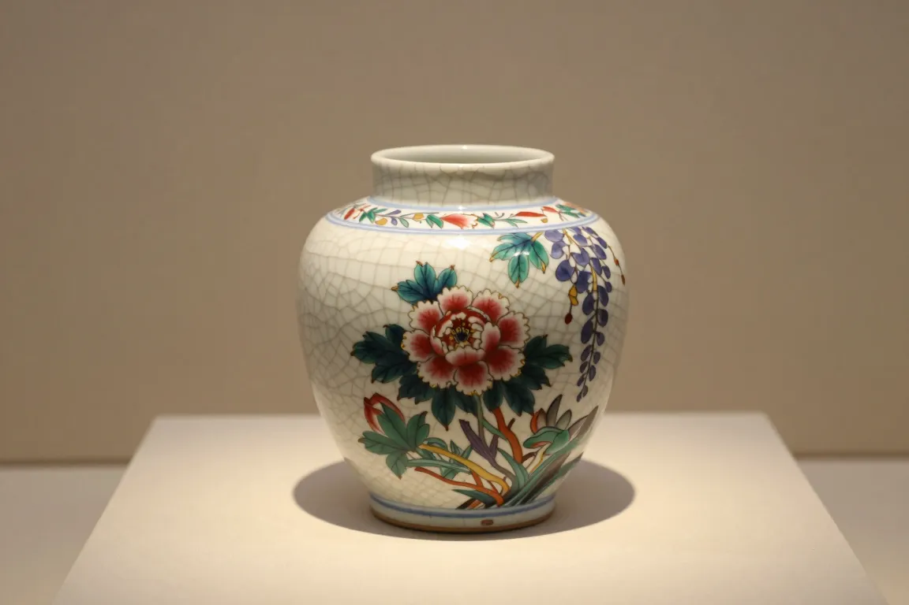

Тонкая керамика Киото, которую Ноономура Нинсэй делал в печи Омуро. Тонкая глазурь с кракле принимает эмалевые цвета и золото в расписных рисунках цветов, холмов и времён года.

Главная идея
Киотский гончар может сделать чайную посуду богатой, как роспись ширмы: тонкий черепок, бледная глазурь с кракле, эмаль и золото.
Принципы дизайна
Вытачивайте тонкую гладкую форму на круге со стенкой 3–5 мм.
Покрывайте форму бледной глазурью с кракле, обожжённой первой примерно при 1100 °C.
Пишите рисунок эмалевыми цветами и золотом по обожжённой глазури и обжигайте снова при 800 °C.
Размещайте рисунок по форме: глициния вдоль высокого кувшина, пион вокруг сосуда для воды.
Оставляйте часть глазури чистой, чтобы расписанной области хватало места.